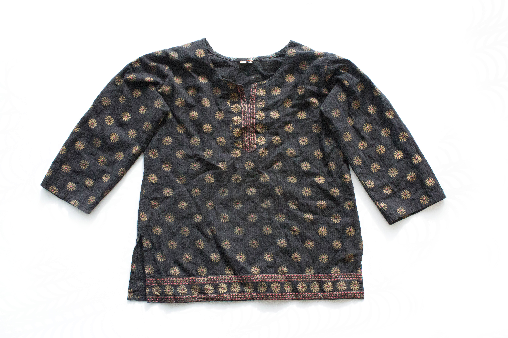

After seeing hundreds of people walk by, the day had finally come. It was an ordinary day, quiet and tranquil, in my little boutique. The afternoon sun shined through the storefront window giving everything a slight glow. I was recently moved from my old perch, on the left, three shelves up, two shirts over, but now I have a much wider view of the world that goes on right outside of my window.
Much did not differ from day to day, but the new crowd across the street was more than enough entertainment. Everyday from my shop window, I watched an endless stream of eager shoppers flow in and out of the trendy apparel store that recently opened across the street. With different sale signs decorating the windows every week, more and more shoppers were attracted like opposite poles of a magnet; the store has endless supply of the latest styles and their shoppers have a wallet.
Happy customers would emerge from the large double doors content and with smiles on their faces holding the bags fat with low-cost garments. These bags were a sign of bargains, good buys, and steals. While the across-the-street competitor won in articles of clothing sold, they lost in quality compared to us. It is a shame to see how good quality goes unappreciated today and is overlooked due to the jaw-dropping prices of t-shirts. However, my patience seems to have paid off. Right then, I was pleasantly surprised by the chime of little bell above the door.
It was rather rare when someone did not get sucked into the flashy, seemingly irresistible sales across the street and instead decided to wander into my shop. She walked around a bit, taking her time and making her way methodically around the store, careful not to overlook anything. Every now and then something would catch her eye and she would reach out and rub the fabric between her thumb and first two fingers with a pensive look on her face. Unlike the others, she seemed to be more thoughtful as she grazed out limited selection.
After she made her way fully around the store and got back to the front, she spotted me. She paused and lingered for a second as she watched as the soft rays of sun tickled my red and gold pattern that glinted in the light. I followed her eyes as they moved from the edge of my sleeves to my collar and to my bottom trim. She carefully examined the intricate design that drew her to me in the first place. She studied my carefully placed stars, dots, and lines, all slightly unique. Just like she did with the others, she took my fabric gently between her fingers; yet this time, it was my fabric and complexion that caused a smile to spread across the face of a pleased customer.